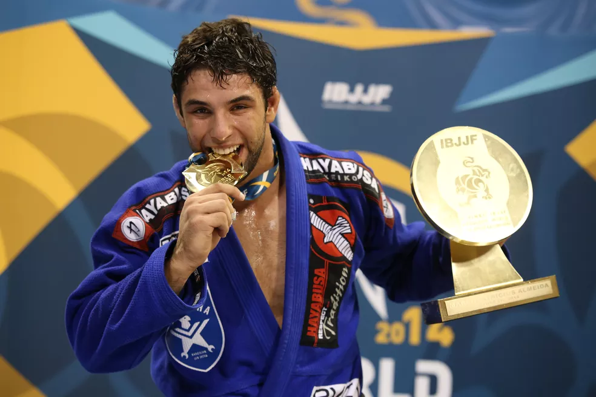

Marcos Almeida "Buchecha"
Maior Campeão Mundial de Jiu-Jitsu

Marcus Vinicius Oliveira de Almeida, também conhecido como Buchecha (Santos, 8 de janeiro de 1990) é um lutador brasileiro de Brazilian Jiu Jitsu campeão mundial em sua categoria e no absoluto. Buchecha é um faixa preta do mestre Rodrigo Cavaca e compete pela academia Checkmat. Rodrigo Cavaca deu o apelido de Buchecha, pelo fato de Almeida ter suas bochechas grandes.
Buchecha é conhecido por ter conseguido ser campeão mundial de jiu-jitsu em todas as faixas (branca, azul, roxa, marrom e preta).
No ano de 2011, Buchecha ficou com a medalha de prata após perder por pontos para o brasileiro Leonardo Pires Nogueira da academia Alliance.
No ano seguinte iniciou-se a carreira vitoriosa de Buchecha. Buchecha conseguiu sair vitorioso nas categorias "Absoluto" e "Pesadíssimo", vencendo seu carrasco Leonardo Pires Nogueira e Léo Leite, respectivamente.
Em 2013, Buchecha sagrou-se campeão das mesmas categorias que havia vencido no ano anterior. Buchecha venceu seu mestre Rodrigo Cavaca nos pesadíssimos e Rodolfo Vieira no Absoluto.
Em 2014, Buchecha conseguiu o tricampeonato nas duas categorias em que disputou, porém a luta mais marcante foi pelo absoluto quando enfrentou o amigo Rodolfo Vieira novamente. Após Rodolfo começar mais ativo, aos exatos 5 minutos Buchecha conseguiu a queda e ficou trabalhando na meia-guarda até o fim da luta, sagrando-se tricampeão no Absoluto.
Em 2017, Buchecha foi novamente campeão na categoria e no absoluto, tendo enfrentado Leandro Lo na final do absoluto.
No ADCC do ano de 2019, Buchecha era um dos favoritos para vencer o maior evento de lutas agarradas do mundo, mas acabou perdendo para o jovem e campeão do evento Kaynan Duarte em uma luta equilibrada.
Ir para o inicio
Voltar a figuras Historicas
Referencia